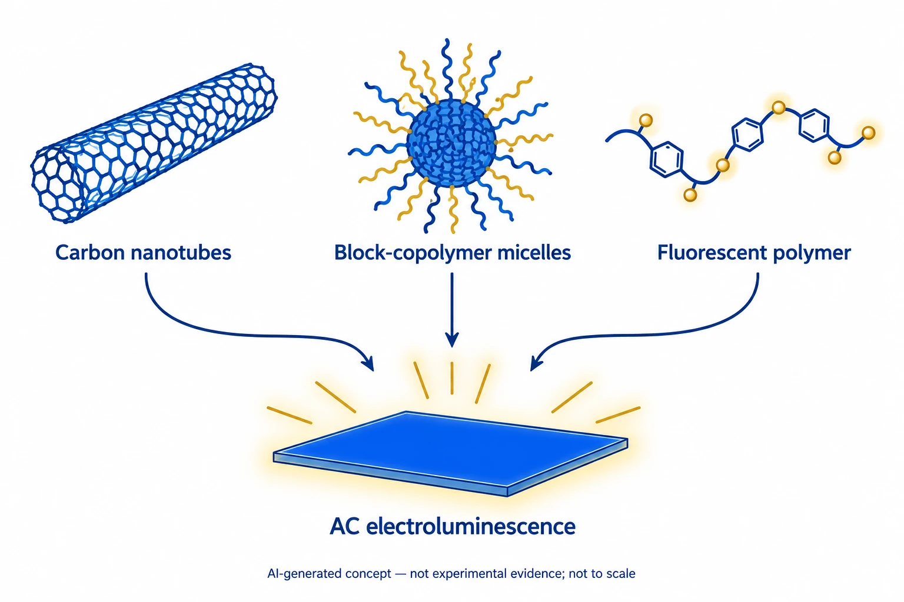

Background
Carbon nanotubes, fluorescent polymers and self-assembled polymer structures combine to produce multicolour light under alternating voltage. Flexible light emission was demonstrated, while peak brightness and lifetime were measured under different conditions.
What the study found
The study combines carbon nanotubes, block-copolymer micelles and fluorescent polymers to produce multiple colours under an alternating-current (AC) drive.
The design brings together charge injection, reduced light quenching and energy transfer between polymers.

This AI-generated, not-to-scale concept diagram connects carbon nanotubes, block-copolymer micelles and fluorescent polymers with AC light emission. The material and light symbols do not reproduce molecular structures, an actual device or experimental results.
The explanation is based on selected sections of the public author-hosted article. Shapes, colours and particle counts do not specify composition, distribution or mixing ratios. Light symbols do not represent measured spectra, brightness, voltage, efficiency, layer order, lifetime or energy levels. Supplements and raw data are outside the evidence scope.
This is not a reproduced paper figure and does not establish permission to reuse the original figure.
Questions and limits
Peak brightness, operation on flexible PET and lifetime were tested under different conditions. Local breakdown at high voltage is also reported for nonuniform PET, so these results should not be combined into one performance claim.
How to compare the results
Compare drive voltage and frequency, dielectric layer, emission colour, substrate, and encapsulation.
Related reading
AC Field-Induced Polymer Electroluminescence with Single Wall Carbon Nanotubes
The related paper’s abstract describes AC charge injection assisted by single-walled carbon nanotubes. This study combines multiwalled nanotubes, micelles and energy transfer between different-colour polymers.
Account for voltage, frequency, dielectric layer and emission colour in the comparison.
Abstract-based introductionSources used in this summary
This summary draws on the main text and original figures. The complete supplementary materials and underlying data have not been independently reviewed.